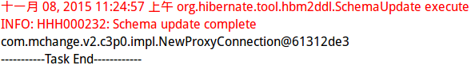

1.导入相应jar包
使用myeclipse可以直接从库中导入

2.编写测试类
测试类中直接在方法名上加上@Test标签即可使用方法直接运行测试
public class DataSourceTest {
private ApplicationContext ctx =null;
@Before
public void setUp()
{
ctx = new ClassPathXmlApplicationContext("applicationContext.xml");
}
@Test
public void DataSourceTest() throws SQLException {
DataSource dataSource = ctx.getBean(DataSource.class);
System.out.println(dataSource.getConnection());
}
@After
public void end(){
System.out.println("-----------Task End------------");
}
}在junit4中，一个POJO类就是一个测试类，测试方法通过@Test来标识，初始化方法通过@Before来标识，释放资源的方法通过@After来标识.
3.测试结果

PS：
窗外的雨淅淅沥沥的下着，想起去年这个时候，排着队去考研现场确认。
现在能在寝室敲敲代码、逛逛淘宝，也是一种幸福吧。